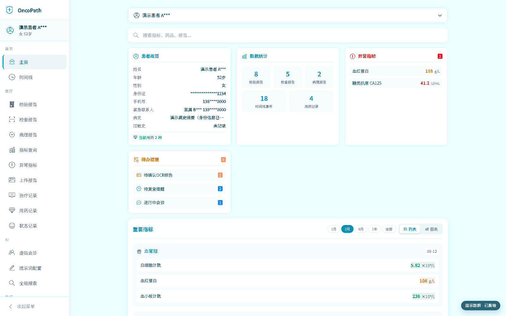

报告归集
检验、检查和病理报告统一管理；OCR 识别结果可人工审查和修正。

向下浏览从资料到脉络
检验、检查和病理报告统一管理；OCR 识别结果可人工审查和修正。
将重要指标和多项组合指标放入同一时间轴，结合参考范围查看连续变化。
通过 AgentTeams 集成入口聚合患者资料、启动会诊并保留可追溯的历史壳。
用分类知识库整理随访计划、检查准备和用药资料，方便后续查阅。
真实界面 · 脱敏演示数据
所有截图均由当前前端以固定虚构数据自动生成；身份字段已掩码处理。
01 / 10
把报告数量、异常项、待办和分组指标收在同一处，先建立当前状态的全局视图。
01 / 05
在手机上先看待办、异常项与重要指标，关键状态保持可扫读。
本地掌握数据
git clone https://github.com/nickzhang1102/oncopath.git
cd oncopath
cp .env.example .envdocker compose up -d --buildNVIDIA GPU 环境以独立 Compose 覆盖文件启用，详见仓库部署文档。